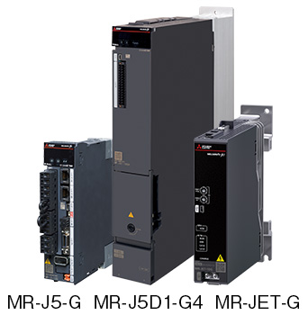
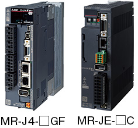
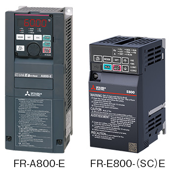

Network-related products |
Programmable Controllers MELSEC
Rangkaian CC-Link IE Field Basic

Drive Products
Penguat servo CC-Link IE Field Network Basic yang kompatibel
Seri AC Servo MELSERVO-J5/MELSERVO-JET
- Stasiun induk yang kompatibel dengan CC-Link IE Field Network Basic dapat mengendalikan penguat servo MR-J5-G/MR-J5D1-G4/MR-JET-G
- Penguat servo dapat dioperasikan sebagai perangkat CANopen® melalui perangkat penghubung
- Mode profil (posisi/kecepatan/torsi) dan mode pemosisian (tabel titik) didukung
- Penguat servo baru-baru ini mendukung topologi saluran*1
- *1.Bila perangkat yang digunakan tidak mendukung topologi garis, maka topologi campuran garis/bintang dapat diterapkan.

| Model*2 | Voltage class | Rated output | Fully closed loop | Compatible servo motor | ||
|---|---|---|---|---|---|---|
| Rotary | Linear | Direct drive | ||||
| MR-J5-□G | 200 V | 0.1…7.0 kW | ● | ● | ● | ● |
| MR-J5-□G-RJ | 200 V | 0.1…7.0 kW | ● | ● | ● | ● |
| MR-J5-□G4 | 400 V | 0.6…3.5 kW | ● | ● | Future support | - |
| MR-J5-□G4-RJ | 400 V | 0.6…3.5 kW | ● | ● | Future support | - |
| MR-J5D1-□G4 | 400 V | 1.0…7.0 kW | ● | ● | - | - |
| MR-JET-□G | 200 V | 0.1…3.0 kW | - | ● | ● | - |
- *2.“□” pada nama model menunjukkan keluaran terukur. Untuk informasi lebih lanjut, silakan lihat “Katalog MELSERVO-J5 (L(NA)03179ENG)" atau “Katalog MELSERVO-JET (L(NA)03187ENG)" .
Seri AC Servo MELSERVO-J4/MELSERVO-JE
- Fungsi Dasar CC-Link IE Field Network tertanam
- Dengan sistem penggerak yang mendukung profil penggerak CiA 402, sistem pemosisian dikonfigurasikan dengan mudah tanpa modul Pemosisian

| Model*3 | Voltage class | Rated output | Fully closed loop | Compatible servo motor | ||
|---|---|---|---|---|---|---|
| Rotary | Linear | Direct drive | ||||
| MR-J4-□GF | 200 V | 0.1…22 kW | ● | ● | ● | ● |
| MR-J4-□GF4 | 400 V | 0.6…22 kW | ● | ● | ● | - |
| MR-J4-□GF1 | 100 V | 0.1…0.4 kW | ● | ● | ● | ● |
| MR-J4-□GF-RJ | 200 V | 0.1…22 kW | ● | ● | ● | ● |
| MR-J4-□GF4-RJ | 400 V | 0.6…22 kW | ● | ● | ● | ● |
| MR-J4-□GF1-RJ | 100 V | 0.1…0.4 kW | ● | ● | ● | - |
| MR-JE-□C | 200 V | 0.1…3 kW | - | ● | - | - |
- *3.“□” dalam model tersebut menyumbangkan output yang dinilai. Untuk detail lebih lanjut tentang nama model, silakan lihat “katalog MELSERVO-J4 (L(NA)03058ENG)” atau “katalog MELSERVO-JE (L(NA)03086ENG)”.
CC-Link IE Field Network Basic inverter yang kompatibel
Seri Inverter FREQROL-A800/A800 Plus/F800/E800
- Fungsi CC-Link IE Field Network Basic tertanam
- CC-Link IE Field Network Basic mewujudkan berbagai operasi inverter yang akan dipantau dengan kecepatan tinggi (beberapa pemantauan dan pembacaan/penulisan parameter juga dapat dilakukan secara bersamaan sehingga meningkatkan kemudahan perawatan)
- Lingkungan jaringan yang lancar memungkinkan pemantauan dan pengaturan inverter dari sistem TI
- Ethernet Standar didukung tanpa menginstal opsi plug-in, sehingga mewujudkan sistem berbiaya rendah dengan mudah

| Model*4 | Voltage class | Capacity | Structure/functionality |
|---|---|---|---|
| FR-A820-□K-E | Three-phase 200 V | 0.4…90 kW | Standard model |
| FR-A840-□K-E | Three-phase 400 V | 0.4…280 kW | Standard model |
| FR-A842-□K-E | Three-phase 400 V | 315…500 kW | Separated converter type |
| FR-A846-□K-E | Three-phase 400 V | 0.4…132 kW | IP55 compatible model |
| FR-F820-□K-E | Three-phase 200 V | 0.75…110 kW | Standard model |
| FR-F840-□K-E | Three-phase 400 V | 0.75…315 kW | Standard model |
| FR-F842-□K-E | Three-phase 400 V | 355…560 kW | Separated converter type |
| FR-F846-□K-E | Three-phase 400 V | 0.75…160 kW | IP55 compatible model |
| FR-E820-□KE | Three-phase 200 V | 0.1…22 kW | Ethernet specifications model |
| FR-E840-□KE | Three-phase 400 V | 0.4…22 kW | Ethernet specifications model |
| FR-E820S-□KE | Single-phase 200 V | 0.1…2.2 kW | Ethernet specifications model |
| FR-E820-□KSCE | Three-phase 200 V | 0.1…22 kW | Safety communication model |
| FR-E840-□KSCE | Three-phase 400 V | 0.4…22 kW | Safety communication model |
| FR-E820S-□KSCE | Single-phase 200 V | 0.1…2.2 kW | Safety communication model |
- *4.“□” pada nama model menunjukkan keluaran terukur. Untuk detail lebih lanjut tentang nama model, silakan lihat “katalog FR-A800 (L(NA)06075ENG)”, “Katalog FR-F800 (L(NA)06085ENG)", dan “Katalog FR-E800 (L(NA)-06131ENG)".